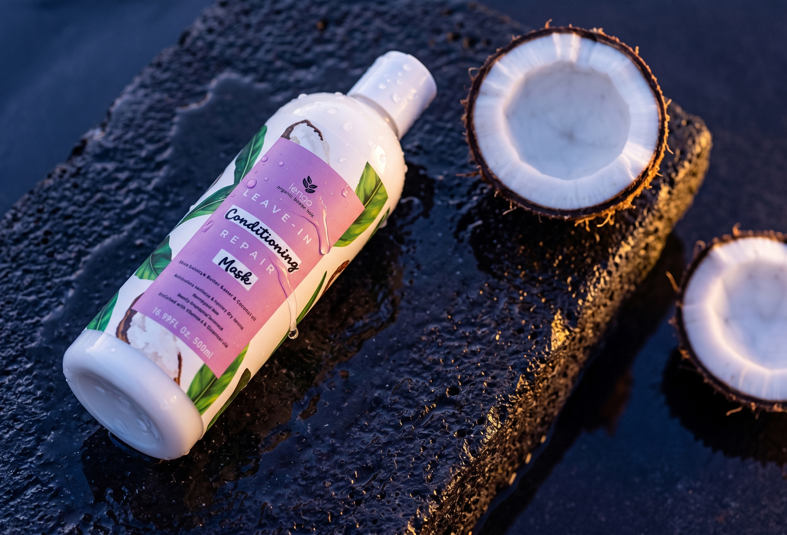
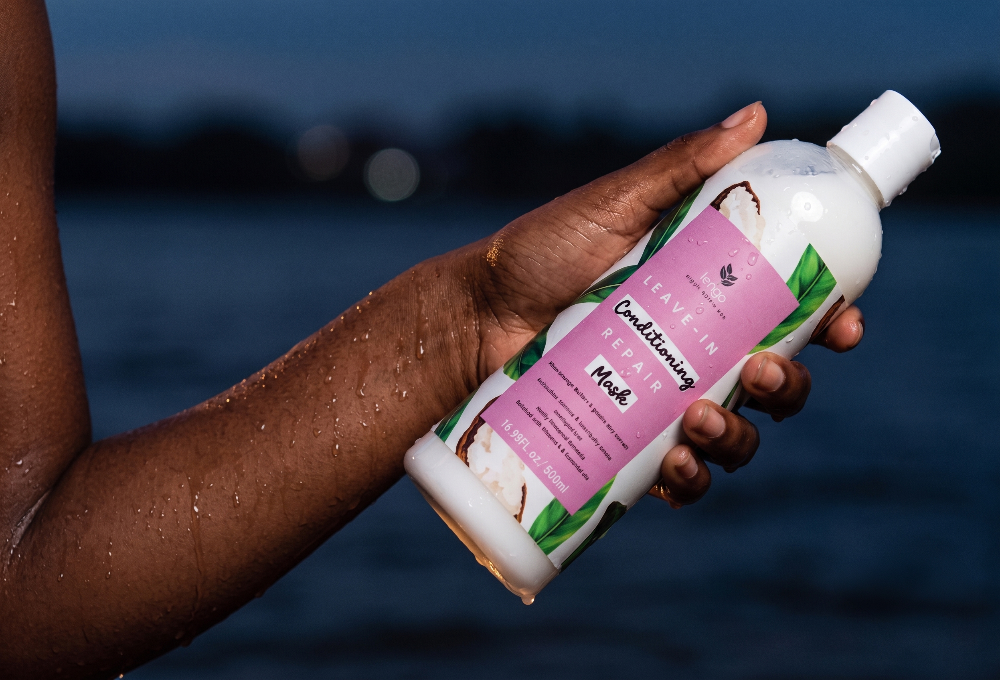
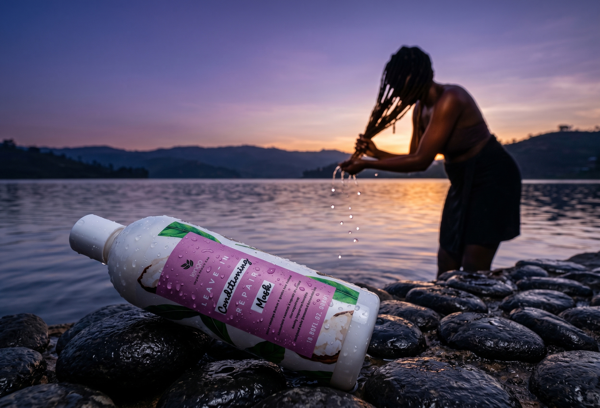

Leave-In Conditioning Repair Mask
Softness, slip, and repair-minded moisture.
An intensive, deep-penetrating leave-in cream treatment made with pure shea butter and other natural oils — formulated to stop and mend breakage, repair split ends, and add manageability and shine with every application.

Beauty is Balance
A wash-day ritual, not just a step.
Built for locs, coils, and coarse, textured strands that need more than a rinse-out conditioner. The Repair Mask is designed to sit with your hair — mending breakage and split ends from the inside of the strand out, so manageability and shine last well past wash day.
Every batch is formulated and manufactured in Uganda, the same as the rest of the Lengo range.

Formulated for coils, locs, and coarse texture.
What's actually in it.
A short, purposeful ingredient list built around pure shea butter — no filler, nothing you can't pronounce.
Newly improved formula, enriched with Vitamin E and essential oils. [REPLACE: confirm final INCI listing against the approved product label before publishing.]
The Ritual
How to use.
Shake well
Before every use, to bring the formula back together.
Apply to clean hair
Work through freshly cleansed, towel-dried hair from mid-lengths to ends.
Let it work
Leave in — no rinse required. Softens, smooths, and restores texture as it sits.
[REPLACE: confirm these directions match the current product label before publishing — the wording above is adapted from Lengo's approved product description, not transcribed from packaging.]

Beauty is Balance.
Complete the routine.
Pair the Repair Mask with the Deep Cleansing Shampoo and Detangler Root Hair Spray for the full Lengo wash-day system.
Explore the Collection